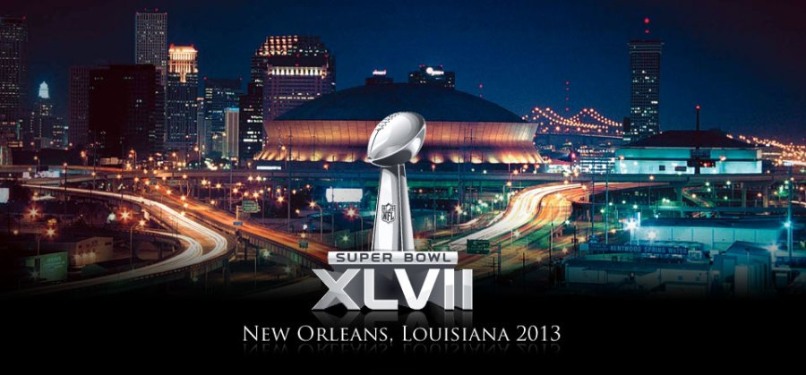

Baltimore Ravens win Super Bowl, defeating San Francisco 49ers, 34-31
NEW ORLEANS, Lois. -- The Baltimore Ravens emerged Super Bowl champions after one of the strangest and most incredible Super Bowl games in recent memory. It's the second championship for the Ravens, who pulled out a 34-31 win over the San Francisco 49ers at the Superdome in New Orleans.
The Super Bowl is the biggest spectacle in American sports, and each year becomes the most watched television event in history. This year, Jennifer Hudson kicked things off with a touching performance of "America the Beautiful" with a choir of students from Sandy Hook Elementary School. Alicia Keys accompanied herself on the piano for a long, jazzy rendition of the national anthem, before the coin toss which resulted in San Francisco receiving to start the first half. Although the game looked at one point like it was going to be a completely unexpected blow-out, with the Ravens leading 28-6 at the beginning of the 3rd quarter, the 49ers got some unusual help that turned the showdown into a much more exciting battle. About a third of the way into the 3rd quarter, right after a record-tying Ravens rushing touchdown, the power went out at the Superdome, knocking the lights and air conditioning out in the indoor stadium. The crowd of more than 71,000 strong, along with a lot of antsy players, coaches, and staff waited for 34 minutes for the power to fully come back on and the game to resume.
In a statement, the NFL said authorities were "investigating the cause of the power outage," and law enforcement sources told ABC News it was just an issue with the building. That didn't stop many people on Twitter from jokingly blaming Beyonce, the energetic halftime performer who surprisingly reunited shortly with her former band Destiny's Child, for shutting down the power. After her performance, even her husband Jay-Z got in on it, tweeting "Lights out!!! Any questions??"
This is the fifth season in a row that the Ravens have made it to the playoffs, led by Coach John Harbaugh, and SB XLVII MVP Quarterback Joe Flacco. It's the team's first Lombardi trophy since 2000. Their victor tonight made them the only team left in the NFL to have never lost a Super Bowl in multiple appearances.
The 49ers quickly followed the long delay with a touchdown, getting themselves right back into the game. Then just a few minutes later, they found themselves in the end zone again, and it appeared the power outage had flipped the momentum towards the 49ers. With a score of 31-29 with more than 7 minutes left in the game, San Francisco looked poised to make the biggest comeback in Super Bowl history, but the team, trying for its 6th title, wasn't able to overcome the Ravens lead. Baltimore was able to run out the clock, and the game ended with a final score of 34-31. Purple and gold confetti fell as the Ravens rushed onto the field and celebrated -- with some colorful language from quarterback Joe Flacco audible on the live broadcast, who was caught saying, "f***ing awesome" on CBS' cameras. The game was already historic thanks to the match-up for John and Jim Harbaugh, the first head coach brothers to ever face each other on football's biggest stage. It was also the final game for the future Hall of Fame linebacker Ray Lewis, who is, as of the conclusion of the game retired from football.